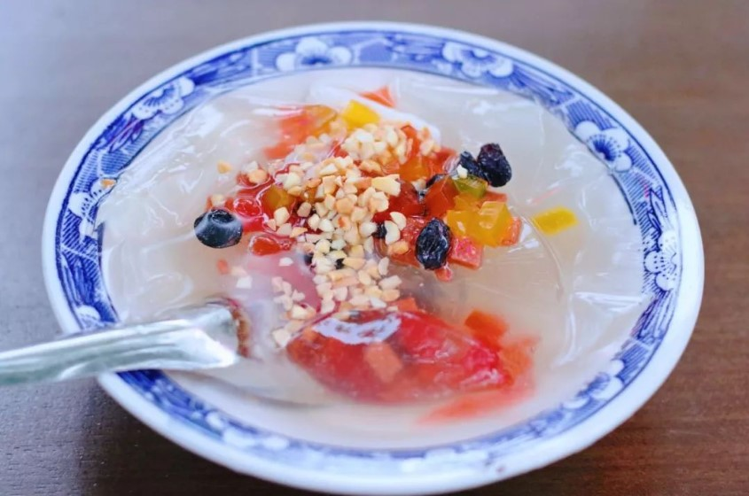
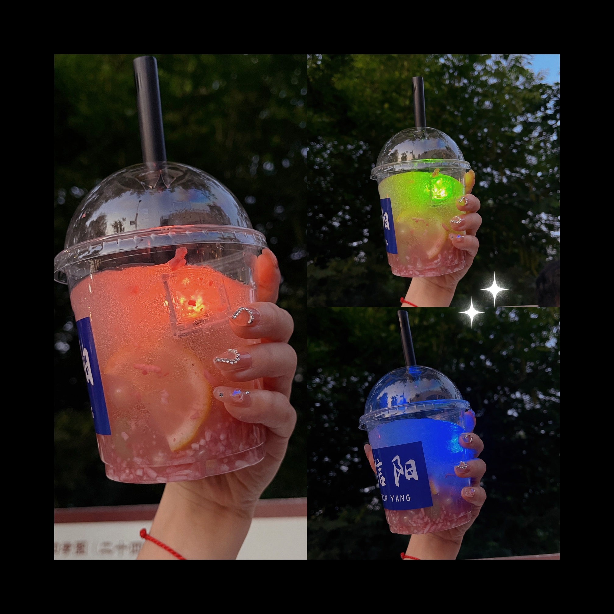

冰粉的做法
 
石凉粉，在有些地区也叫作冰粉，是河南省信阳市浉河区的一种著名特色小吃，属于豫菜系。该菜品类似果冻，但因为是天然植物做出来的，所以比果冻更健康，配上薄荷汁、柠檬汁、红豆等调料，清凉解暑。该食物深当地人的喜爱，老少皆宜。
制作方法简单，只是有些耗时，预计制作时长 3 小时（其中包含 2.5 小时静置成型时间）。
预估烹饪难度：★★
必备原料和工具
- 冰粉籽 200g
- 过滤豆浆渣的纱布一块
- 凉白开 2000g
- 薄荷汁 10ml / 薄荷粉 10g
- 一次性透明塑料杯（可选）
- 遇水发光冰块（可选）
计算
每次制作前需要确定计划做几份。一份够 5 个人吃。
每份：
- 冰粉籽 200g
- 凉白开 2000g
- 薄荷汁 10ml / 薄荷粉 10g
操作
- 将凉白开倒入盆中；
- 将冰粉籽全部用纱布包起来，开口处打结
- 将包好的冰粉籽放入凉白开中，在凉白开中用力揉搓 6 分钟
- 然后将凉白开放置 2.5 小时，即可成型
- 随后将石凉粉用勺子装进准备好的一次性透明塑料杯中，加入 10ml 薄荷汁或者 10g 薄荷粉（柠檬汁、山楂汁、桑椹汁也可），再放入遇水发光冰块，用勺子慢慢搅拌均匀
附加内容
- 操作时，需要注意观察凉白开的颜色和粘度变化，如颜色过浅或者水不黏，则说明冰粉籽量不足，或者是揉搓力度和时间没有到位。
如果您遵循本指南的制作流程而发现有问题或可以改进的流程，请提出 Issue 或 Pull request 。